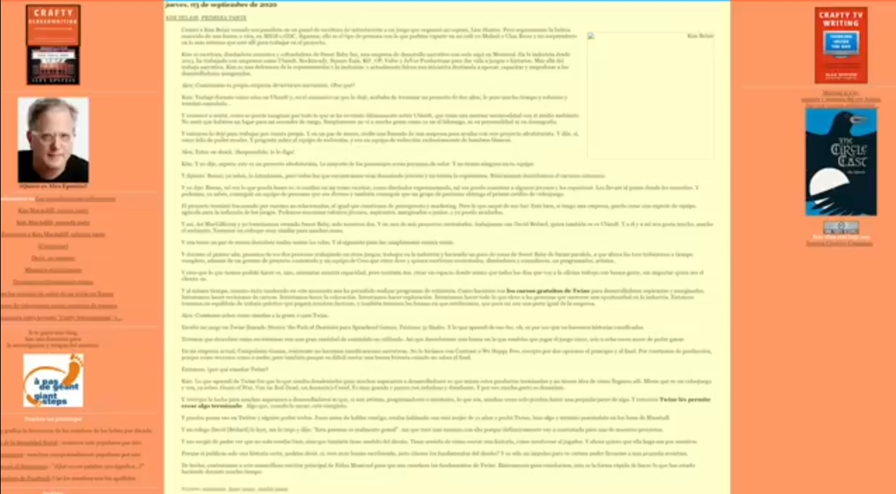
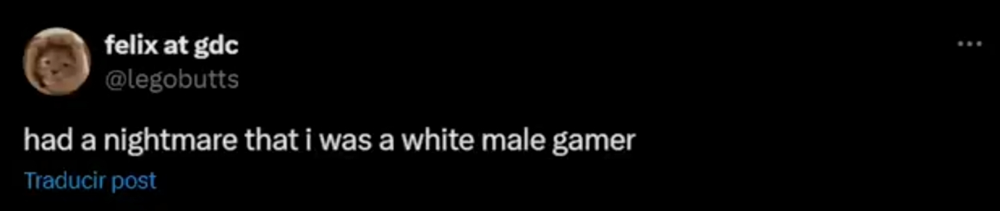
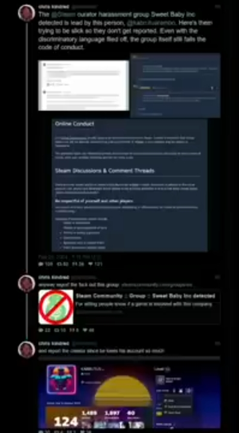
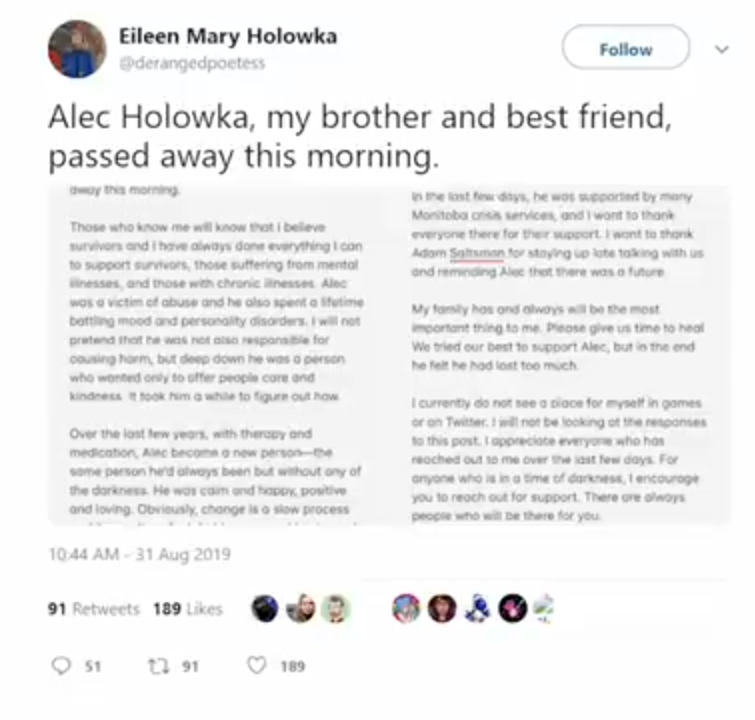
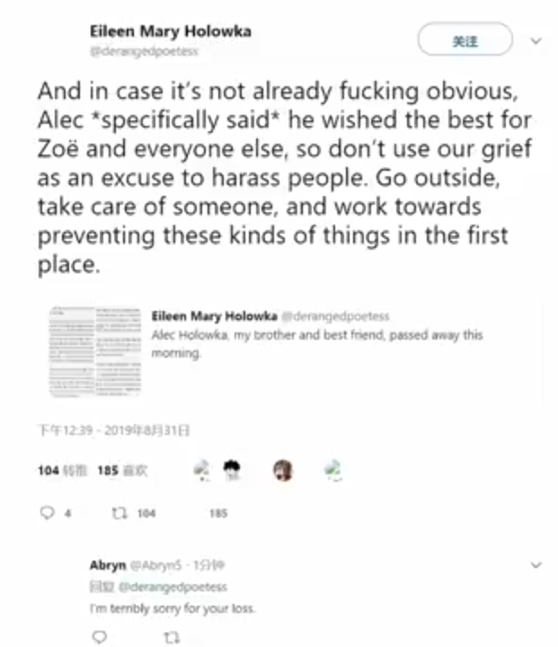
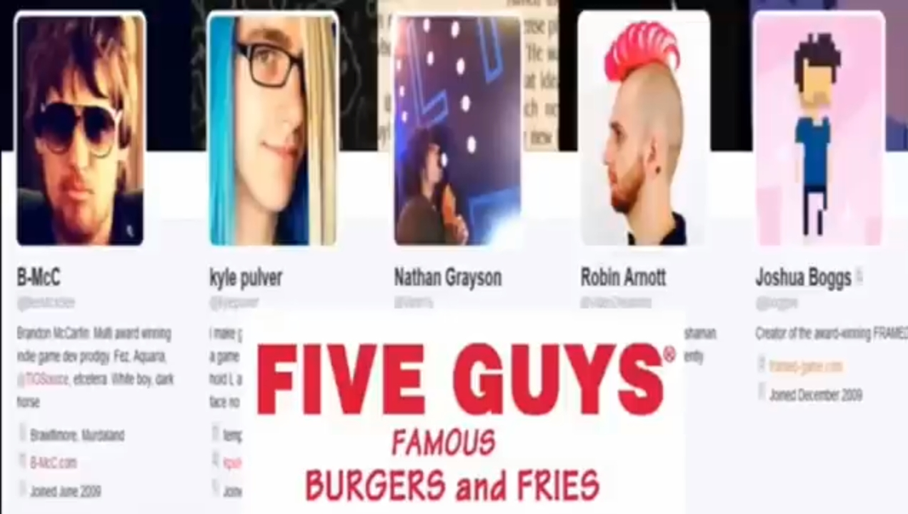
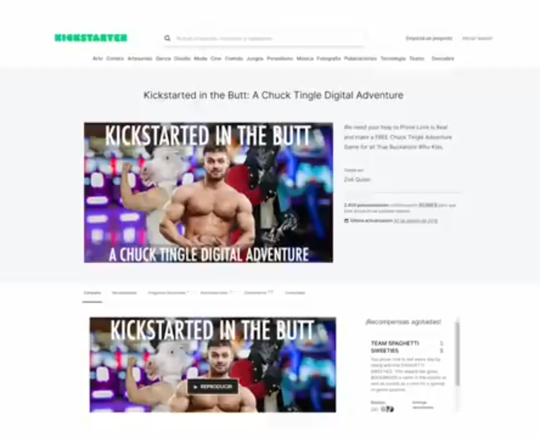
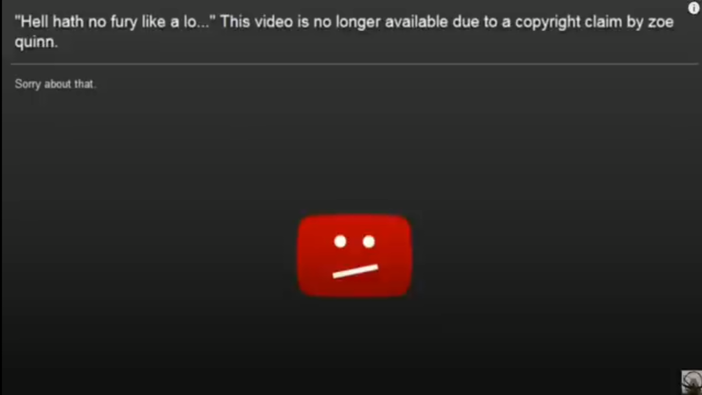
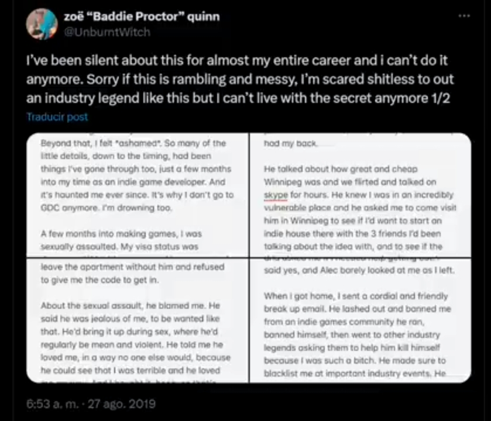

20 octubre 2021
La ceo de Sweet Baby inc. Kim Belair aparece en GDC con la conferencia "Now you see me: Representation as innovation"
10 Mayo 2023
Es publicado en YouTube el video "BlackRock: the Company That Controls* the World's Governments" en el canal Aperture
Gamer Gate 2014
En agosto de 2014 hubo un evento llaado Gamergate, fué un tema de controversia portagonizada por una audiencia que no tenía nada que ver con la comunidad gamer cuando se volvió mainstream.
Desde entonces, periodistas del medio han usado el término para deliberadamente atacar la comunidad de videojuegos frecuentemente, gamergate se pudo volver un termino para describir todo lo malo en linea para muchas personas, pero gamergate no tiene un definición definitiva, gamergate significa diferentes cosas para diiferentes personas.
Por un lado describe campañas de odio y acoso a manos de jugadores en línea hacia mujeres y periodistas de medios en particular, también que es la razón de la perpetua guerra política Estadounidense, el genesis de la conspiración y desinformación. Por el oto lado es sobre la ética y la moral, sobre demandar estandares éticos superiores al periodismo; las razones siendo conflictos de interés cuando los perriodistas ofrecian más privilegios a ciertos desarrolladores y nepotismo.
Después de una demanda de FOIA (Acta de Libertad de Información) el FBI publicó una version redactada de su propia investigación de Gamergate, encontraron que lo que empezó como un movimiento que demandaba mejor integridad periodistica fué secuestrado por "trolls", el FBI determinó que eran un molestia básica que, como se integraban al movimiento gamergate en general, fué más fácil para figuras de autoridad en los medios y sus publicaciones crear la narrativa de que todos los involucrados eran tóxicos. Esta narrativa de victimización perpetuada por mucho tiempo, instaurada en la población general, describe gamergate como un a campaña misógina de odio y enojo encabezada por las perores personas imaginables con la punica meta de acosar.
Escencialmente eso es gamergate, una moneda de dos caras, donde una cara eran los que veían un problema de corrupción mediatica, y la otra eran los que veían una fachada de todo lo malo que hay en internet
Sweet Baby Inc.
Es una empresa de consultoría que se centra en la modificación de elementos narrativos: Personajes, Dialogos, Historias. Para que sean más atractivos a inversores ESG / DEI
Gamergate 2024
Ahora tenemos una segunda parte de la historia, gracias a la compañía llamada Sweet Baby Inc. Que lleva un buen tiempo dominando las noticias de videojuegos, declaran que la comunidad gamer es tóxica, que los jugadores están mal informados y criticando a la totalidad de la base de jugadores que se atrevían a criticarlos de alguna forma.
Marzo 2024
El portal The Guardian publica un articulo titulado Diez años de Gamergate y los conspiracionistas siguen rutinariamente atacando mujeres y consultoras Woke
, Empaquetando la noticia como una señal de vitud.
En esta publicación The Guardian conectó directamente a Sweet Baby Inc. con gamergate, Un grupo de 200,000 seguidores en steam y miles en un canal de discord afirman que Sweet Baby inc. esta forzando secretamente a los desarrolladores de videojuegos a cambiar los cuerpor, étnias & sexualida des de los personajes de videojuegos para agradar a la ideología Woke, creen que Sweet baby ha escrito y controlado cada videojuego popular de los últimos 5 años, removiento hombres blancos heterosexuales.
Notas similares fueron publicadas por los principales portales de noticias de videojuegos:
En Kotaku se publicó: Sweet Baby Inc. no hace lo que algunos gamers piensan que hace.
(black Girl Gamer, GaymerX, dragonbaby, silver string media, soft chaos)
En PC-Gamer: Una compañía llamada Sweet Baby Inc se ha convertido en el objetivo de gamers "anti-woke" porque ofrece consultoría, un servicio estándar de la industria que hasido normal por años.
En Euro Gamer: Los desarrolladores de SpiderMan & Allan Wake hablan sobre su apoyo a la consultoría de Sweet Baby Inc. despues de que un grupo en linea reclama la imposicion de una agenda a los juegos en los que han trabajado.
Game Developer: ¿Porqué estan Valve & Discord permitiendo el acoso a Sweet baby Inc.?
Discord y Steam son usados como hogar de reaccionarios para acosar desarrolladores de videojuegos.
Take This
Una organización de Salud Mental sin fines de lucro del código 501c3 de EEUU llamada "Take This", la cual ha colaborado con Bethesda, Ubisoft & Riot Games, hizo una publicación anunciando Gamergate 2: Si estas leyendo esto probablemente has escuchado hablar sobre algo llamado GamerGate2, es laúltima campaña de acoso en la industria de videojuegos apuntando a Sweet Baby Inc. un estudio de desarrollo narativo con base en Montreal, la campaña ha inpactado entidades y juegos asociados a Sweet Baby, periodistas cubriendo el problema como yo y otros asociados como objetivos del acoso, tu quizás estés confunso sobre como hablar sobre el problema y qué, si es posible, puedes hacer, a esto hemos llegado.
Los internautas criticaron a Take This por que descubrieron que era una non-profit que recibía fondos de el Departamento de seguridad Nacional de Estados Unidos, lo que significa que es con dinero de impuestos que se está fundando la campaña que describe a Sweet Baby como la victima, tal y como sucedió en 2014.
Alissa Melano
La responsable de las publicaciones de Kotaku que reclama que son los jugadores los que no saben que es lo que Sweet Baby hace realmente, ha estado abiertamente amenazando a los líderes de la industria por no hablar sobre el tema
En Kotaku: Sweet baby Inc. no está forzando la diversidad, está ocurriendo de manera natural
escribió Alissa al mismo tiempo que en twitter le responden con el clip de Kim Belair en GDC.
Llamó a todos racistas, pero le reclamaron por una entrevista de 2020 sobre como fué una descepción que el equipo de desarrollo fuese blanco y que quiere eliminar a los hombres blancos del mundo del gaming.

Varios de sus empleados diciendo cosas racistas sobre los blancos @legobutts

Un video de la desarrolladora de cliffhanger que dice que no quiere contratar a la gente blanca porque no le gustan, y que no quiere lidear con ellos porque son peligrosos.
El Origen
La controversia inició por que un usuario de Steam conocido como Kabrutus, creó una lista de juegos que han trabajado con Sweet baby inc. llamandola "SBI DETECTED" con el propósito de facilitar a los usuarios la infromación para evitar esos juegos.
Cuando la lista se compartió en los circulos gamer, los empleados de Sweet Baby Inc. con actos que solo pueden describirse como acoso, intimidación y censura, decidieron intentar tirar la lista y exigir la suspención permanente de Kabrutus en Steam.

Kabrutus es un gamer de origen Latino, especificamente de Brasil, tiene 800 Juegos en su librería.
La lista tenía entonces 9,000 Seguidores, despues de su intento de dañar a un gamer y censurar una lista de juegos, despues de eso, la lista llegó a más de 200,000 seguidores. La gente no acosó a Sweet Baby inc. La gente simplemente no quiere jugar sus juegos, y en respuesta, ellos atacaron a Kabrutus y eso esparció el tema y marcó el punto de parti da de Gamergate 2.
Terceros
Periodistas fuera del area de videojuegos hablan del tema
Wired: la pequeña empresa en el centro de la nueva campaña de odio ene el mundo de videojuego.
El oscuro secreto de sweet baby inc.
Sweet Baby tiene dos subsidiarias: Baby Ghost (Caridad) & Weird Ghost (Financiera). En su staff tienen a una persona: Ellen Mary Hollowka.
Es hermana del difunto Alec Hollowka (31 08 2019) quien es co-creadora del estudio Infinite Ammo, en twitter dijo "Falleció" pero en una web dice que se "Suicidó", y dice que Alec dijo que le deseaba el bién a Zoë Quinn


Zoë Quinn
% años previo al suicidio del papu... Fué infiel y se acostó con 5 personas, uno era su jefe y consigió una promoción, tres desarrolladores parra que la ayudacen con su juego y un periodista de kotaku para escribir articulos positivos sobre su juego.

Saboteó una campaña feminista sobre desarrollo de videojuego por y para mujeres, doxeó al equipo de producción porque quería todo el dinero de caridad (le darían 8%) y se quedó 60,00 por un gamejam.

Se quedó con el dinero de un kickstarter de un juego que nuca desarrolló, 85,000 dolares.

Ha tirado videos que hablan sobre ella con falsos dmca.

Ha contactado a moderadores de reddit para que retiren hilos donde se le criticaba.
Fué a pedir a la ONU para que le permitieran regular y censurar el internet para que no la criticacen, y que encarcelen a los que la llamaron zorra.
Acusó falsamente a muchas personas de abuso. Uno de ellos fué Alec, quien sequitó la vida en 2019. Ella y la hermana de Alec lo acusaron de haberla abusado los meses que fueron roommates en 2012. (SIN PRUEBAS)

El equipo de Night In the Woods, juego que Alec financió y desarrolló en el estudio que el fundó, decide correrlo y removerlo porque creén a "supervivientes". Ellen heredó la compañía tras la muerte de Alec y cofundó WeirdGhost con el dinero de Infinite Ammo.
Son las que financían SBI y tienen lazos con Zoë Quinn.
Una vez que esto se hizo publico, la gente estalló.
Take This 2
Respondiendo a Gamergate2:
El odio, acoso y toxicidad no tienen lugar en los videojuegos, tomando medidasespecificas y directas de manera oportuna podemos mitigar mayorer daño a personas talentosas y dedicadas a los videojuegos y ayudar a prevenir futuras ocurrencias de estos eventos dañinos.
07 Julio 2024
Kabrutus sube a su canal de YouTube el video